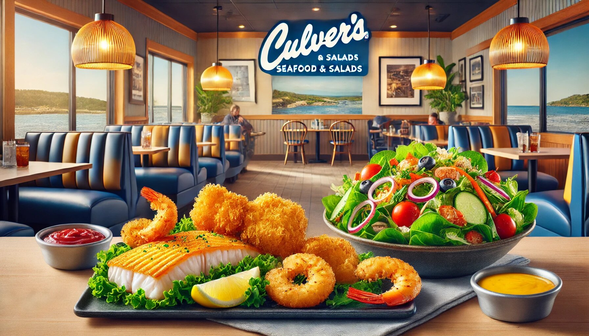

When it comes to fresh, delicious, and satisfying meals, Culver’s Seafood & Salads stands out as a top choice for seafood lovers and salad enthusiasts alike. Whether you’re craving perfectly cooked fish, succulent shrimp, or a crisp, refreshing salad, this restaurant has something to delight every palate. With a focus on quality ingredients, thoughtful preparation, and a welcoming atmosphere, Culver’s Seafood & Salads is the go-to spot for a meal that’s both healthy and indulgent.
In this article, we’ll dive into all the reasons why Culver’s Seafood & Salads deserves a spot on your must-visit list. From their mouthwatering menu options to their commitment to transparency (think prices, calories, ingredients, and allergens), we’ll cover everything you need to know. So, grab a fork, and let’s explore what makes this place so special!
Let’s start with the star of the show: the seafood. At Culver Seafood & Salads, the fish is always fresh, and the shrimp is always succulent. Whether you’re a fan of classic fish and chips, grilled salmon, or buttery shrimp scampi, you’ll find it here—and it’s all prepared with care.
One of the best things about their seafood offerings is the variety. You can enjoy your fish grilled for a lighter option or fried to golden perfection if you’re in the mood for something a little more indulgent. And let’s not forget the shrimp! Whether it’s tossed in a zesty cocktail sauce or served as part of a hearty seafood pasta, every bite is a reminder of why we love seafood so much.
Now, let’s talk about the salads. If you think salads are just a pile of lettuce with a few toppings, think again. At Culver’s Seafood & Salads, salads are a main event. Crisp greens, vibrant veggies, and a variety of proteins (including seafood, of course) come together to create salads that are as satisfying as they are nutritious.
Whether you’re in the mood for a classic Caesar salad, a tangy Greek salad, or something more unique like a seafood Cobb salad, you’ll find it here. And the dressings? They’re the perfect finishing touch—homemade, flavorful, and drizzled just right.
What’s great about their salads is that they’re customizable. Don’t like croutons? No problem. Want to add grilled shrimp or salmon to your salad? Go for it! This flexibility makes it easy to create a meal that’s exactly what you’re craving.
In today’s world, knowing what’s in your food is more important than ever. That’s why Culver’s Seafood & Salads makes it easy to access information about prices, calories, ingredients, and allergens. Whether you’re counting calories, avoiding certain allergens, or just curious about what’s in your meal, you’ll find all the details you need.
This level of transparency is a breath of fresh air. It shows that Culver’s Seafood & Salads cares about their customers and wants them to make informed choices. Plus, it takes the guesswork out of dining out, so you can focus on enjoying your meal.
One of the things that sets Culver’s Seafood & Salads apart is how inclusive their menu is. Whether you’re a seafood fanatic, a salad lover, or someone who enjoys a bit of both, there’s something for you. And if you have dietary restrictions, you’re in good hands.
Their menu includes options for gluten-free, low-calorie, and low-carb diets, so you don’t have to worry about missing out. Plus, with so many fresh ingredients and customizable dishes, it’s easy to create a meal that fits your needs.
Great food is only part of the equation—the dining experience matters too. At Culver’s Seafood & Salads, the atmosphere is warm, inviting, and perfect for any occasion. Whether you’re grabbing a quick lunch, enjoying a family dinner, or celebrating a special occasion, you’ll feel right at home.
The staff is friendly and attentive, always ready to answer questions or make recommendations. And the restaurant itself is clean, cozy, and designed with your comfort in mind. It’s the kind of place where you can relax, savor your meal, and maybe even strike up a conversation with the table next to you.
Let’s be honest: dining out can get expensive. But at Culver’s Seafood & Salads, you get great value for your money. The portions are generous, the ingredients are high-quality, and the prices are reasonable. Whether you’re ordering a hearty seafood platter or a fresh salad, you’ll leave feeling satisfied—and not just because of the food.
And let’s not forget about their daily specials and combo deals. These offers make it even easier to enjoy a delicious meal without breaking the bank.
At the heart of Culver’s Seafood & Salads is a commitment to quality. From the ingredients they use to the way they prepare their dishes, everything is done with care and attention to detail.
Their seafood is sourced from trusted suppliers, ensuring that it’s always fresh and sustainable. Their salads are made with crisp, locally sourced produce whenever possible. And their kitchen staff takes pride in every dish they create, from the simplest salad to the most elaborate seafood entrée.
This commitment to quality is evident in every bite. It’s what keeps customers coming back—and what makes Culver’s Seafood & Salads a standout in the world of casual dining.
Looking for a restaurant that the whole family will love? Look no further than Culver’s Seafood & Salads. With a menu that appeals to all ages and tastes, it’s the perfect spot for a family meal.
Kids will love the simple yet tasty options, like fish sticks or a classic garden salad with their favorite toppings. And parents will appreciate the healthier choices and the fact that everyone can find something they enjoy.
Plus, the relaxed atmosphere means you don’t have to worry about keeping the kids on their best behavior. It’s a place where everyone can unwind and enjoy good food together.
Let’s face it: life can be stressful. But at Culver’s Seafood & Salads, they believe that good food should come with a side of fun. That’s why you’ll often find a touch of humor in their menu descriptions or staff interactions.
For example, their “Shrimply the Best” shrimp platter is a playful nod to how delicious their shrimp really is. And their “Lettuce Entertain You” salad section is sure to bring a smile to your face. It’s these little touches that make dining here such a joy.
Culver’s Seafood & Salads is more than just a restaurant—it’s a destination for fresh, flavorful, and satisfying meals. With their wide variety of seafood and salad options, commitment to transparency, and welcoming atmosphere, it’s no wonder they’ve become a favorite among diners.
So, the next time you’re in the mood for a meal that’s both healthy and indulgent, head to Culver’s Seafood & Salads. Whether you’re a seafood lover, a salad enthusiast, or just someone who appreciates good food, you’re in for a treat.
And don’t forget to check their website for prices, calories, ingredients, and allergens before you go. It’s just one more way they make dining out easy and enjoyable.